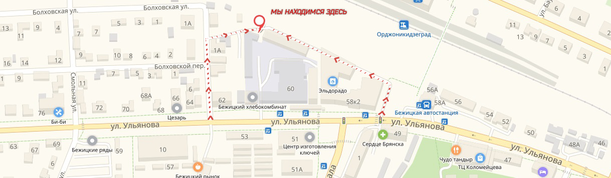

Преимущества тонировки
При тонировании вы защищаете свои глаза
и глаза пассажиров от яркого света.
Обшивка салона из-за ультрафиолета не будет выгорать!
Вы защищаете себя от авто-воров, они не разобьют стекло.
и глаза пассажиров от яркого света.
Обшивка салона из-за ультрафиолета не будет выгорать!
Вы защищаете себя от авто-воров, они не разобьют стекло.
Вы повышаете свою безопасность, боковые стекла не разобьются на осколки
при боковом столкновении!
Тонировка придает стиль и индивидуальность вашему автомобилю!
Тонировка придает стиль и индивидуальность вашему автомобилю!
Предварительная
Запись
Для записи, необходимо
позвонить по телефону
или перейти в группу ВК:
позвонить по телефону
или перейти в группу ВК:
+7(999)220-37-95
Мы в Вконтакте!
Контакты
Мы находимся в Бежицком районе,
на территории ТД "Тимошковых",
ул. Ульянова, 58 а.
на территории ТД "Тимошковых",
ул. Ульянова, 58 а.
Работаем
Без выходных
Предварительная запись по телефону.
